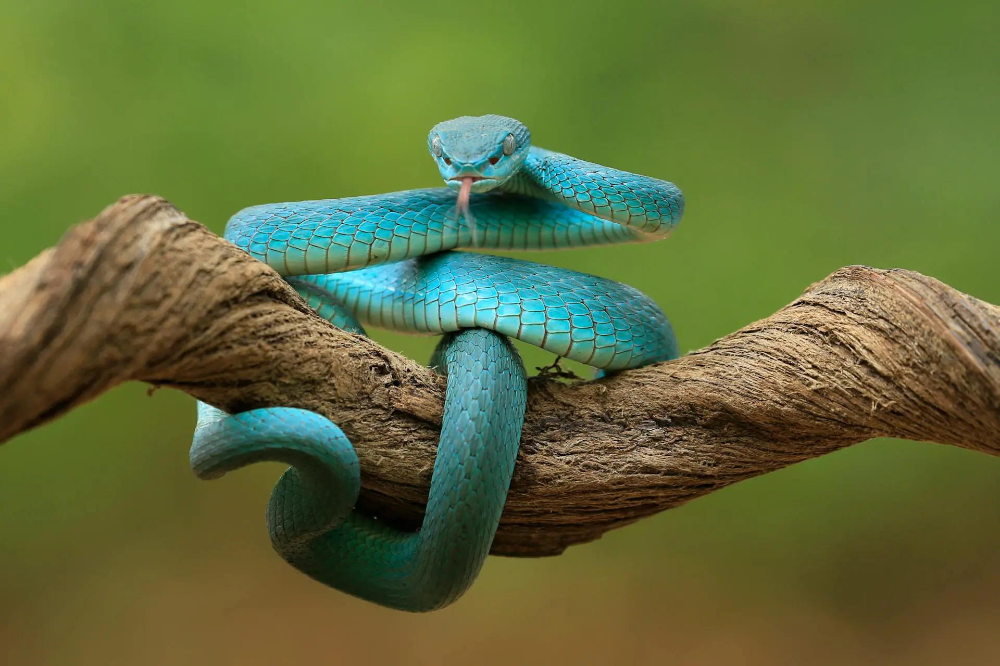
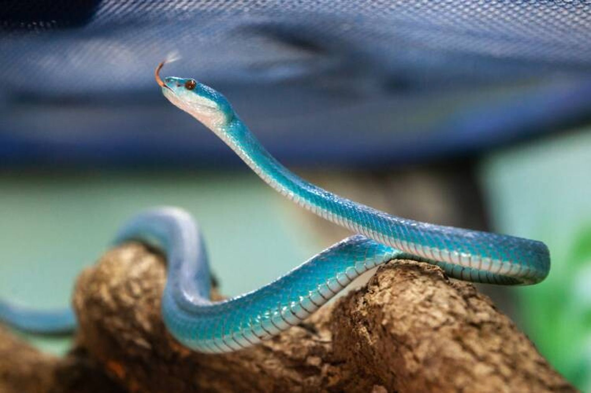

A Víbora Azul é uma serpente de aparência impressionante, encontrada principalmente em florestas e regiões rochosas da Ásia e da África. Seu corpo alongado apresenta tons que variam do azul claro ao azul intenso, tornando-a uma das serpentes mais bonitas do mundo. Ela é ágil e se move rapidamente, o que a ajuda a capturar suas presas, como pequenos roedores, aves e outros animais de menor porte.
 O veneno da Víbora Azul é potente, mas geralmente ela evita o contato com humanos. Quando provocada, pode morder em defesa própria. Por isso, é importante observar esses animais à distância e nunca tentar capturá-los sem conhecimento especializado. Apesar de perigosa, ela é essencial para o equilíbrio da natureza, ajudando a controlar a população de pequenos animais.
Além de sua beleza, a Víbora Azul também desperta curiosidade científica. Estudos mostram que seu veneno contém compostos que podem ter aplicações médicas, como no desenvolvimento de medicamentos e pesquisas sobre coagulação sanguínea. Observar e respeitar este animal contribui para a preservação da espécie e do ecossistema onde vive.